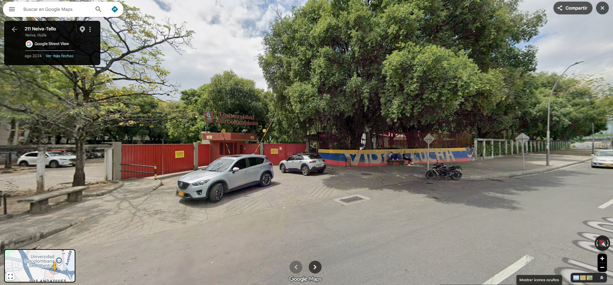

Universidad Surcolombiana
RECORRIDO INTERACTIVO
Experiencia transmedia documental por los espacios del campus.
🖱️ Scroll en PC
📱 Desliza en pantalla táctil
ENTRAR AL RECORRIDO
Foto 1 de 10 | Desliza el dedo verticalmente para caminar

Video 1
✕